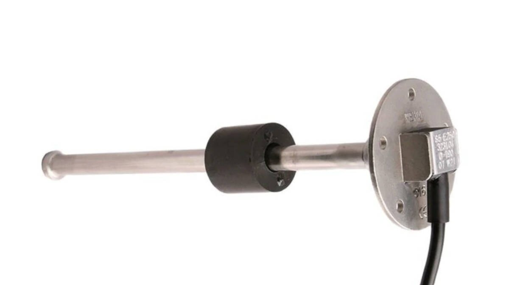

fuel sensor
2022.12.13
Victoria, BC. Canada.
Last summer we realized that the needle on our fuel gauge no longer moved when turning the ignition. We assumed the gauge was bad, but the broken part was the fuel sensor in the tank. We opened the tank and found that the little floating arm had rusted off and was bobbing freely in the tank.

We fished it out and cruised for an entire summer without one. We would refill the main tank often, with an ear near the deck fill to make sure not to add too much (when the fuel starts to fill the feed tube it means that the tank is full, and the sound it makes when it reaches the tube tells us it's time to stop.)
We measured the height of our tank(33cm) and bought a new 5 hole flange (S5) WEMA fuel sensor and a matching WEMA gauge(compatible with S5 senders). When buying both of these things, note that there are two standard resistances:
- 0(empty)-190(full) ohm, used mainly in European gauges.
- 240(empty)-30(full) ohm used by American gauge manufacturers.
Senders and gauges must have the same resistance range. If an American and European sender and gauge are paired together, the gauge will read backwards.
What Is Resistance? Resistance(ohms), is a way to measure fluid levels inside a tank. Resistance is how the sender and gauge communicate information to each other, or in more complex terms, it is the amount of contact between two wires expressed in numerical form.
The screws that came with the unit were too long, so we reused our old ones. When we replaced the sensor, we weren't sure how many fuel was in the tank and feared a spill, so we unscrewed each one slowly, ready to screw it back in if any fuel started seeping out but none did, the level was just below the top of the tank.

We bought a WEMA water tank gauge because Trotac didn't have any more fuel gauges in stock. They're the same, except the gauge reads 'water'- not a problem, we know what is what. This gauge is fine for Diesel, Fuel, Gasoline, and water.
We made the decision to install the new gauge inside the cabin. Why? Because we cannot re-use the old wires as leading wires, like many wires on Pino they are trapped in the walls. There's no easy path to the instrument panel from there, and so we decided to stop making life harder for ourselves.

The gauge will go to a switch, then to a gang terminal with other systems in the boat. When we start the engine, we'll go inside and flick on the switch to check the level of fuel in the tank, then we'll shut it off after we've shut the engine. Having the gauge inside will protect it from the weather.

We had to buy a 52mm hole saw to make the hole the gauge. We installed it near the closet, because it is nearest to the bus that powers the unit. Also, it is installed high enough that nothing will disturb it. The switch was installed right underneath, see a short video[Mastodon] of the switch in action.